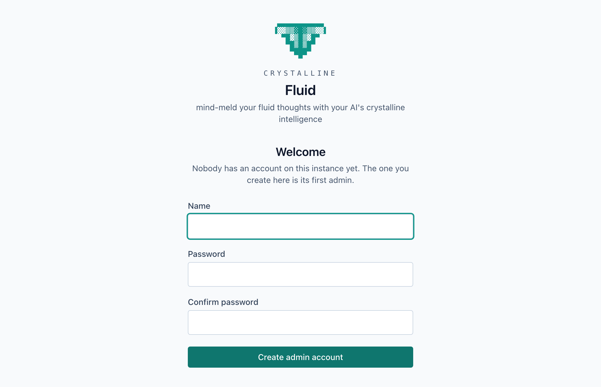

6 Installing locally
Don’t Panic.
- Douglas Adams, The Hitchhiker’s Guide to the Galaxy
Everything in this chapter fits in one sitting, and the sitting ends with a test: you will ask your agent about something it learned an hour earlier, in a session that has never heard of it, and it will answer. Until that happens nothing is installed, whatever the package manager says. So the chapter is built backwards from that moment. Install the binary, wire the harness, give the agent a domain: three steps, the same three on every platform, and then the test.
If you skipped Part II, two words carry the chapter: a domain is a registered folder with a MANIFEST.md that says when an agent should look there (Section 5.1), and an engram is one markdown file of knowledge inside it (Section 5.2). Everything below makes one of each.
6.1 Install the binary
Crystalline is one binary, and getting it onto a machine is whatever that machine’s usual way is. On a Mac with Homebrew:
brew install jordiboehme/tap/crystallineDebian, Ubuntu and their relatives get a .deb for amd64 and arm64 from the releases page, and it ships a systemd unit, installed disabled, that chapter 7 turns on. Windows gets an MSI that adds Crystalline to the PATH and upgrades in place; the Windows builds are not code signed yet, so expect a SmartScreen prompt and check the download against the SHA256SUMS file beside it. The bare binary ships for every platform too, and the macOS builds are signed and notarized. The permanent address for all of it is on the colophon page: https://github.com/jordiboehme/crystalline/releases/latest.
Claude Desktop is the pleasant exception: no binary, no terminal. Download crystalline-v<version>.mcpb from the same page, one universal bundle for Apple Silicon Macs and Windows, with per-arch bundles for Intel Macs, then in Claude Desktop open Settings > Extensions > Advanced settings > Install Extension… and pick the file. Upgrading is the same motion, since Desktop has no in-app update for an extension: download the newer .mcpb and install it over the current one. Desktop users can skip the terminal parts of what follows; the agent creates its first domain itself.
6.2 First run
Nothing needs starting. The first agent that connects starts a background daemon, the one process that holds the index open, and every later agent, terminal and browser tab attaches to it. crystalline serve runs the same daemon in the foreground if you want to watch it, and crystalline serve --daemon in the background, but on a laptop most people never type either.
What you will type into is a browser. The daemon serves Fluid at http://localhost:7411 by default, however it was started, and the first visit to an instance that has no accounts yet is a short form rather than a login page: pick a name and a password, and you are that instance’s admin, already signed in (Figure 6.1). You are trusted to fill that form in because you are on the machine; a connection from the machine itself needs no token, and a bind that anyone else could reach gets a different treatment in chapter 7. Once any account exists the form is gone for good.

One more download belongs to first run. Semantic search wants the local embedding model; the daemon fetches it in the background on its first start, and crystalline model download fetches it ahead of time. Until then search is plain text, which works, and finds only the words you searched for.
6.3 Onboarding a harness
This is the step that turns a binary into a colleague, and it is one command:
crystalline install claude-codeCodex takes crystalline install codex and the Copilot CLI crystalline install copilot. What the command does deserves a paragraph, because every part of it corresponds to something a new hire is given on day one. It registers the MCP server with the harness, as crystalline mcp --harness claude-code, so the agent has the tools. It writes a session-start hook that runs crystalline prompt system on a fresh start, after a /clear and after a compaction, so every session opens with the briefing. It writes a stop hook, the once-per-session nudge from chapter 3 that asks the agent to capture what it learned before the session ends. And it copies the four skills into the harness’s skills folder, the playbook that says when to use which tool. Run it twice and the second run touches nothing. --skip-mcp, --skip-hooks and --skip-skills leave a part out, --project writes into the current repository’s config instead of your global one, and crystalline uninstall claude-code reverses the lot while leaving anything that is not Crystalline’s own alone.
The briefing is the part to look at once with your own eyes, because it is the whole of what your agent knows about you at the start of a session. crystalline prompt system prints it (Figure 6.2): an intro, the behaviour rules and one line per registered domain, drawn from the ## When to Use bullets of that domain’s manifest. A narrow question goes to the domain that owns it, a broad one sweeps all of them, and a write always names its domain. On a fresh install the domain lines are empty, which is correct: the desk is set up and nobody has shown the new hire the filing cabinets yet.

Claude Desktop runs no hooks and needs none. Its server delivers the same routing block as part of the MCP server’s instructions on every connection, and the optional companion skill from the releases page, uploaded under Settings > Capabilities > Skills, adds the capture and collaboration playbook on top. A chat client with no hooks that never shows the model a server’s instructions gets a standing instruction instead: crystalline prompt connector prints the paragraph to paste into its custom instructions, and the agent fetches its own onboarding with one list_domains call at the start of every session.
The install is recorded in a local receipt, and the receipt is what keeps a harness current: the first time a newer Crystalline runs, it refreshes the installed skills at session start, updating changed ones (an edited copy is kept beside the new one as SKILL.md.bak) and removing any the new version no longer ships. The --harness flag in the MCP registration is the other half of the same idea. A crystalline mcp process started with it asks the receipt whether that harness has its hooks wired, and if so serves that session neither the skills over MCP nor a second copy of the routing block, since the harness already has both as files. Nothing in that decision comes from the connecting client; it is settled before the session opens. A registration written by hand without the flag, or a remote client, is served the full surface, and skills.serve set explicitly to true or false makes every client identical.
6.4 The first domain and the first engram
Now the filing cabinet. It takes three prompts and no terminal: your agent creates the domain, labels it and writes the first thing into it, doing the scaffolding, the labelling and the writing through its own tools, add_domain, edit_engram on the manifest and write_engram:
You: Set up a Crystalline domain called engineering in
~/knowledge/engineering. Its scope is the payments service:
route questions about the payments service, the retry queue
or a deploy there.
Agent: Created and registered engineering. The manifest's Scope and
When to Use sections carry what you just said, so your next
session will see the domain in its briefing.
You: Remember in engineering: the retry queue drops jobs older
than 24 hours. It is a gotcha, tagged payments.
Agent: Captured "Retry queue gotcha" in engineering, at
~/knowledge/engineering/retry-queue-gotcha.md.
You: Why does the payments queue lose jobs?
Agent: The retry queue drops jobs older than 24 hours, from
"Retry queue gotcha" in engineering.The embedding model is fetched automatically when the daemon starts, which the first agent to connect already did, so the last answer can come from the semantic ranking with no download step to remember. A Desktop user’s path is exactly this, since there is no terminal there at all. It works even without the first prompt: an agent that finds nowhere to write creates a domain itself under Documents/Crystalline, and the first engram it captures lands there.
The bullets the agent wrote into the manifest deserve a second look. Open it before you go any further and make sure the ## Scope and ## When to Use sections say what you would say, because those bullets are the line your agent reads about this domain at the start of every session. Write them the way you would label a drawer for a new hire: “route questions about the payments service, the retry queue or a deploy here”.
Under the hood, the first prompt was three commands. The quick start on the project’s README does the whole thing in five lines, and the last three are these:
mkdir -p ~/knowledge/engineering
crystalline domain init ~/knowledge/engineering --name engineering
crystalline domain add engineering ~/knowledge/engineeringdomain init scaffolds the folder with a starter MANIFEST.md; domain add registers it under the name the agent will use from now on, and indexes what is already there, which for the moment is the manifest. There is no separate sync step. The second prompt was one command, and running it by hand once shows the file appear:
crystalline write engineering "Retry queue gotcha" \
--content "- [gotcha] The retry queue drops jobs older than 24h #payments" \
--tags gotcha,paymentsLook in ~/knowledge/engineering and there it is, retry-queue-gotcha.md, the file chapter 5 read line by line. Search it back with crystalline search "retry queue" and it is a plain text hit. On a machine where no daemon has fetched the model yet, fetch it, re-sync with embeddings and search for something the engram never says:
crystalline model download
crystalline sync --embed
crystalline search "why does the payments queue lose jobs"The engram comes back from a question phrased nothing like it, which is the third prompt’s answer, and the ranking your agent uses. Engrams written through Crystalline are indexed the moment they land; crystalline sync exists for files that arrive some other way, an editor or a git pull, when no daemon was watching. crystalline status shows what got indexed.
6.5 Verifying the loop
Now the test. Start a session in your harness and ask about the retry queue without explaining anything. Watch what the agent does before it answers: it searches engineering, because the briefing told it that is where the payments knowledge lives, and it answers from the engram, with the address in hand if you ask for it. That is recall, and it proves the wiring.
What that does not yet prove is the capture beat, which is the one that matters over months. Tell the agent something it could not have known, the way Ripley did on her Monday in March:
You: The cutoff is 24 hours because Encom's chargeback window is
three days - the queue needs two days to notice a job. Remember
that, and why.
Agent: Captured: added the chargeback window as the reason to
"Retry queue gotcha" in engineering, with a depends_on relation
to a new "Encom chargeback window" engram. Want me to adjust
the wording?Close the session. Open a new one, which has never heard of Encom, and ask why the cutoff is a day. If the answer names the chargeback window, you are done: the agent looked something up that it learned in a conversation that no longer exists. It is a Voight-Kampff test run in reverse. You are not checking whether the thing across the desk is a replicant; you are checking that it remembers.
When it fails, the fix is usually quick. If the agent answered from general knowledge without searching, the session did not receive the briefing: run crystalline prompt system yourself and check that engineering has a line, and if it has none, the manifest’s ## When to Use section is empty. If the agent recalled the gotcha but not the reason, the capture never landed: look in ~/knowledge/engineering for the file, and check that you said yes when it proposed writing.
Once the test passes, close the terminal. Nothing in daily use needs it: the agent recalls and captures through its tools, the daemon starts itself and the one place you will go on purpose is the browser tab. The commands in this chapter were the installation. From here on, what you type is addressed to a colleague.
Deckard’s first afternoon at Tyrell is the five lines above, on a laptop that arrived that morning. He runs the brew line and the install line, and instead of domain init Ripley has him check out the repository the team keeps its knowledge in and domain add that folder, so his agent’s first session opens with a briefing that names engineering and everything the team has taught since March. He asks it about the retry queue to see what happens, and it tells him about the sin bin, the cutoff and the bank before he has read a single wiki page. He was onboarded in chapter 2 by a person over two days. His agent took a minute, and knew more.
Lambert, who runs the customer side and has never opened a terminal on purpose, installs the Desktop extension the same week. She has no domains, and her agent makes one the first time it needs somewhere to write, a customers folder under her Documents. By Friday it holds four engrams about the renewal she is working on, and she opens localhost:7411 to read them. Two installs, one with a keyboard and one without, and the same loop running on both.
The desk is set up, the drawers are labelled and the new hire has remembered one thing overnight. Everything after this is a matter of what you choose to teach.
Installing is three steps on every platform: install the binary (Homebrew, a .deb, an MSI, or the Claude Desktop .mcpb that skips the terminal entirely and updates by installing the newer bundle over the old), wire the harness with crystalline install <harness>, and give the agent a domain with domain init and domain add. The install writes the MCP registration, the session-start hook that delivers the routing briefing, the stop hook that nudges capture and the four skills, and it is safe to run again. Nothing needs starting: the first agent to connect starts the daemon, which serves Fluid at localhost:7411, where the first visit creates the admin account. The install is finished when a fresh session recalls something a previous one learned.